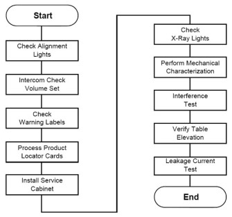

Operating Documentation
Direction 5193574-800, Rev# 22
LightSpeed 7.X Service Methods
Module Version 1.0, Version Date 4/22/10
Operating Documentation |
Use these procedures to functionally check every part of the table/gantry subsystem.
Illustration 1: Table Gantry Integration Process Overview

Required Tool: Multimeter
| Required Persons | Preliminary Reqs | Procedure | Finalization |
| 1 (FE or mechanical supplier) | labor on-site |
| ||||
| Verify all personnel have cleared the system. The gantry rotates during this check. | ||||
Adjust the scan room lights to normal customer operating levels.
Turn ON the AXIAL DRIVE ENABLE and HVDC ENABLE switches (located on the gantry service switch panel).
Turn on the alignment light switch on the gantry service panel. The gantry rotates and the alignment lights turn ON.
| ||||
| LASER EYE INJURY! | ||||
| NEVER STARE DIRECTLY INTO THE LASER BEAMS WHEN YOU OPERATE THE ALIGNMENT LIGHTS. STARING INTO THE BEAMS CAN CAUSE PERMANENT EYE DAMAGE. | ||||
Place a sheet of plain white paper over the output port of each light.
Verify that the two laser lines coincide and appear as a single line.
| NOTE: | GE designed the internal axial lasers on the current CT system to shine down on the collimator. Do NOT adjust the internal alignment lights at this time. The tomographic plane tests use the QA phantom to check the internal axial lasers alignment to the collimator. |
Ensure that cradle is level.
Raise the table to its highest elevation.
Extend the cradle until you see both the internal and external laser lights shining on the cradle.
Place a metric rule on the right edge of the cradle, and measure the distance from the internal axial laser line to the external axial line. Verify this distance equals 240.0 mm ±1.0 mm.
Place the rule on the left edge of the cradle, and measure again.
Leave the cradle in its current position, and lower the table to the minimum elevation.
Measure the distance between the internal and external lights on both edges of the cradle, as above. Verify the distance remains equal to 240.0 mm ±1.0 mm.
Press the alignment light button on the gantry control panel to turn the lights OFF.
Start the Mechanical Characterization tool from the Calibration tab on the Common Service Desktop.
Select the [CHARACTERIZE ALIGNMENT LIGHTS] button from the interface.
Follow the on-screen instructions.
The relationship of table height to ISO center and internal-to-external landmarks must be characterized for proper interference matrix functionality.
| ||||
| Important: Do NOT perform tilt characterization. | ||||
Select the [CHARACTERIZE TABLE HEIGHT] button from the interface.
Follow the on-screen instructions.
| NOTE: | If the table height is less than 22 mm or greater than 25 mm, relative to ISO, you must adjust the table height using the table leveling pad and adjusters. Raise or lower all adjusters equally to achieve desired results. (Refer to Align the Table to the Gantry.) |